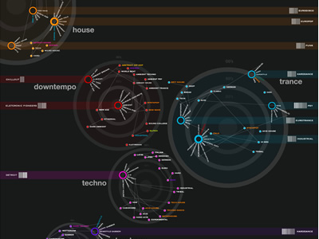

Spatial interfaces for exploring music
On her blog, Anita Lillie (master's candidate at MIT's media
lab) has asked for help finding projects and papers about
spatially-based organization of digital music collections. I've posted a
few comments pointing to ones that I know about - but I'm sure there
are more. If you know of other interesting spatial interfaces to
music add a comment here or over at Anita's research blog. And as an extra credit assignment, use the Apple SDK to port some of these to the iPhone.
Here are some of my favorites:
Hannes Jentche's inteface:
{kind=link}
Justin Donaldson's visualization of MyStrands Data

Fidg't': Visualizer:

PlaySom

nepTune:

Musicovery

Musicream

Music Rainbow:

Electronic Boom

TuneGlue

Search Inside the Music

Hi,
You may also find this one interesting (actually, it includes some of same the visualizations above):
http://www.readwriteweb.com/archives/the_best_tools_for_visualization.php
Cheers,
Gustavo
Posted by Luis Gustavo Martins on March 17, 2008 at 07:52 AM EDT #